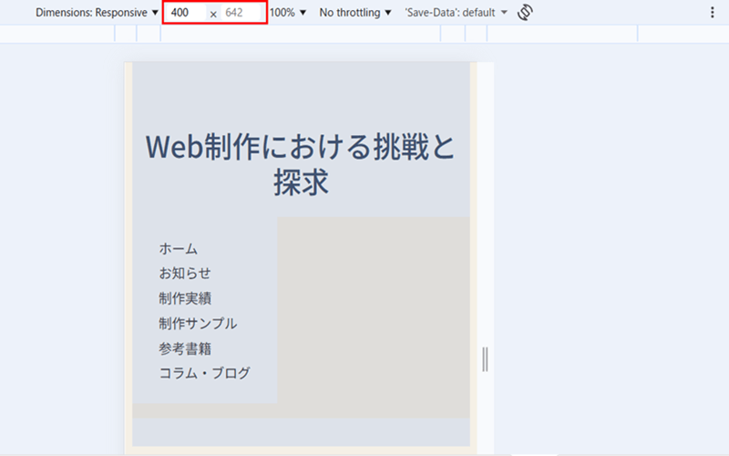

1. はじめに
レスポンシブデザインの確認方法はいくつかありますが、まずは
ブラウザに標準で備わっている機能 を使うのが最も手軽で確実です。
ここでは、実務でよく使われる方法と、確認すべき画面幅の基準をまとめます。
2. 🧰 ブラウザの標準機能（最も手軽）
最も確実で、今すぐ使える方法です。
● Google Chrome デベロッパーツール
- チェックしたいページを開き、F12 キーを押します。
- 左上の 「デバイスツールバーの切り替え」アイコン（スマホとタブレットのマーク）をクリックします。
- 画面上部で iPhone や Pixel などの機種名を選択したり、端をドラッグして 自由にサイズを変更できます。
メリット
- 無料
- インストール不要
- ホバー（マウスオーバー）やクリックの挙動も確認できる
3. 📐 確認すべき画面幅は“3カテゴリだけ”で十分
レスポンシブデザインの確認は、すべてのデバイスをチェックする必要はありません。
実務では 「PC・タブレット・スマホ」 の3カテゴリを押さえれば十分です。
● 各ブラウザで共通して確認すべき幅
- PC：1280〜1440px
- タブレット：768〜820px（iPad相当）
- スマホ：375〜430px（iPhone・Pixel・Galaxy の標準幅）
Chrome・Firefox・Edge のどれを使っても、上記の幅を指定すれば ほぼ同じ結果 が得られます。
4. 🖼 実際の操作例（画像の説明）
下の画像のように、Chrome のデバイスモードで
「400 × 642」 など、確認したいサイズに変更してチェックします。

5. 🌐 オンラインのシミュレーションツール
URL を入力するだけで、複数デバイスでの見え方を一覧で確認できます。
-
Responsive Design Checker
デスクトップ、タブレット、スマホの主要サイズをまとめて確認できます。 -
Designmodo Responsive Test
特定のピクセルサイズを入力して、より詳細に検証できます。
こちらは研究用・補助的なツールとして使うのがおすすめです。
📝 まとめ
- まずは ブラウザ標準のデベロッパーツールで確認するのが最も確実
- チェックすべきは PC・タブレット・スマホの3カテゴリ
- 幅の基準を押さえれば、全デバイスを確認する必要はない
- オンラインツールは補助的に使うと便利